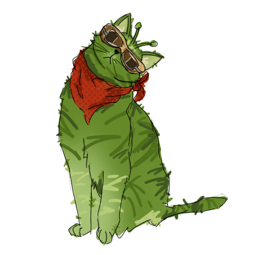

Stars are born inside a nebula, which is essentially a huge cloud of gas and dust. Once part of that cloud becomes dense enough, gravity pulls inwards and begins to collapse. The gas in the nebula heats up and forms a glowing core. This new protostar isn't a true star, but it's on the way to becoming one. Once this core reaches about 10 million K, it will start hydrogen fusing. That's when the star classifies into a main sequence star, the begninning of it's lifetime. This process of main sequence can take hundreds of thousands to millions of years!
A star's starting mass is the major factor in how it lives and how it ends.
| Starting Mass | Likely Path | End Result |
|---|---|---|
| Under 0.08 | Never starts hydrogen fusion. | Brown Dwarf |
| 0.08 to 0.5 | Very long main sequence life | White Dwarf (in the far future) |
| 0.5 to 8 | Giant phase, sheds outer layers. | White Dwarf |
| 8 to 20 | Supergiant, then supernova | Neutron Star |
| Above 20 | Very short life, then supernova or collapse. | Black Hole |
Stars are sorted into classes by temperature using letter, going from hottest to coolest.
| Class | Color | Surface Temp | Percentage of Main Sequence Stars |
|---|---|---|---|
| O | Blue | 33,000+ | Extremely rare |
| B | Blue-white | 10,000 - 33,000+ | About 0.1% |
| A | White | 7,300 - 10,000 | About 0.6% |
| F | Yellow-white | 6,000 - 7,300 | About 3% |
| G | Yellow | 5,300 - 6,000 | About 8% |
| K | Orange | 3,900 - 5,300 | About 12% |
| M | Red | 2,300 - 3,900 | About 76% |